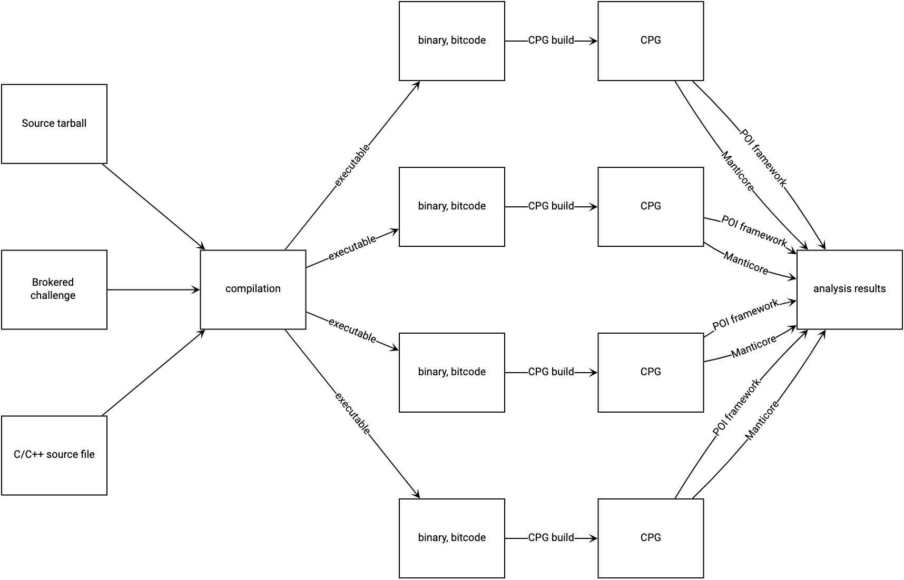
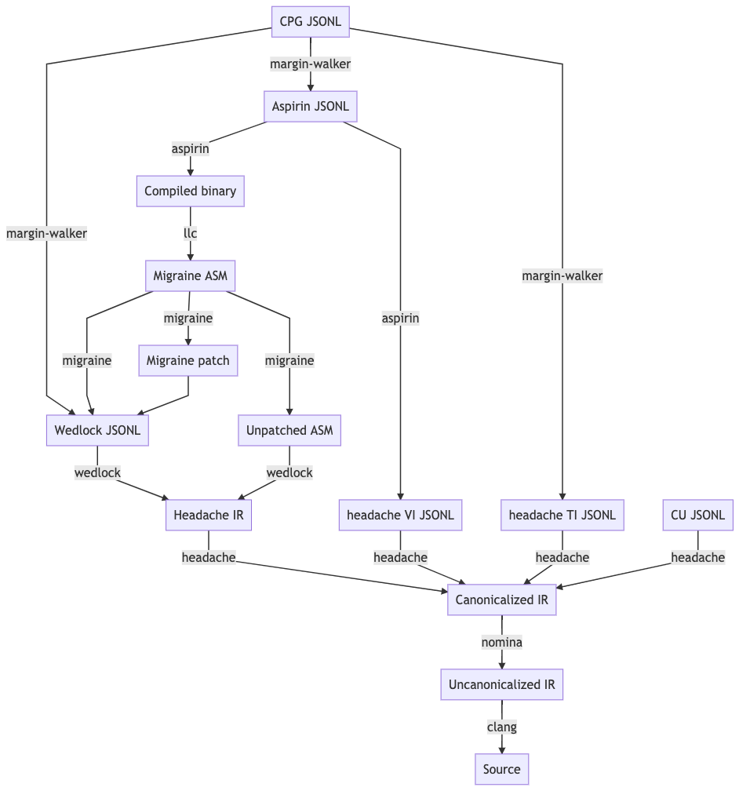

Architecture¶
This page provides an index of tools and components within MATE. For a higher-level overview of MATE, see Overview.
Analysis Workflow¶
The MATE workflow can be visualized as a transition from some source-code representation of a program, to a compilation that can produce one or more executables, to one CPG build per executable, and finally to individual analyses run on each CPG:
System architecture¶
The MATE system is decomposed into eight services:
- server
The
servercomponent presents a REST API that can be used to initiate individual steps of the analysis workflow depicted above. This API allows users to manually run analysis steps with custom options or changes in response to errors. The server API also implements backend queries for MATE UI components including Flowfinder.- executor
The
executorcomponent asynchronously processes long-running requests initiated by theservercomponent, such as program compilation, CPG generation, and POI analyses.- db
The
dbcomponent runs a standard PostgreSQL installation and stores all generated Code Property Graphs. Other components (including other components of MATE) can access CPGs via the MATE domain-specific query language connected to the database. In addition to storing CPGs, thedbcomponent stores all persistent MATE system state.- storage
The
storagecomponent supplements thedbcomponent with a MinIO object store and is used to store large analysis artifacts such as program source code, compiled binaries, and logs.- broker
The
brokercomponent is a MATE-internal message bus used to coordinate MATE components.- mate-ui
The
mate-uicomponent serves a web-based user-interface to the MATE system. It provides access to Flowfinder, Under-constrained Manticore, and an interface to monitor the compilation and CPG generation processes.- notebook
The
notebookcomponent provides a Jupyter notebook environment for interacting with the MATE system via the Python domain-specific query language.- mantiserve
The
mantiservecomponent exposes a REST API for running symbolic execution queries against programs. The API allows symbolic execution tasks to be parameterized by specific detector plugins that monitor for potential vulnerabilities.
Docker Images and Compositions¶
The above services are deployed in Docker containers using docker-compose.
Docker Images¶
First-Party¶
The following images are built from the top-level Dockerfile in CI, and can
be built manually by supplying the --target flag to docker build. The
default target is dev. By convention, the images are usually tagged with the
target names prefixed by mate-, e.g., mate-dist.
dev: An image with all of the tools necessary to develop MATE, including build systems, complilers, linters, etc.dist: An image with MATE installednotebook: Jupyter Notebook serverui: Web UI components (Flowfinder, builds page, etc.)
Third-Party¶
These images are used in MATE compositions, but contain third-party software.
postgres: Used for thedbcomponent (described above)rabbitmq: : Used for thebrokercomponent (described above)minio: Used for thestoragecomponent (described above)
Docker Compositions¶
MATE has several docker-compose.*.yml files. These are generally run in
conjunction with docker-compose.yml, e.g.:
docker-compose -f docker-compose.yml -f docker-compose.ui.yml up
On especially powerful hosts, docker-compose.yml can be replaced with
docker-compose.large.yml. Each of the other compositions runs particular
services:
.clients.yml: Run an IPython (Jupyter) shell from the command-line, without using the MATE Notebooks service..notebook.yml: Runs thenotebookservice, see MATE Python Notebooks..test.yml: Used by MATE developers to test MATE, see Hacking on MATE..ui.dev.yml: Used by MATE developers to develop MATE, see Hacking on MATE..ui.yml: Runs themate-uiservice.
Component index¶
Compilation components¶
The following tools and components are responsible for compiling a program into an LLVM bitcode module that is suitable for CPG generation.
blight¶
Provenance: Trail of Bits (GitHub)
blight is a build tool wrapper for C/C++ compilers (cc and c++) as well as the
standalone preprocessor (cpp), assembler (as), linker (ld), and other standard
build tools.
MATE uses blight for instrumenting arbitrary program build systems, ensuring that
they can be eventually ingested as CPGs. blight’s responsibilities include:
Ensuring that MATE’s required compilation flags are always passed to individual compiler invocations.
Saving an accurate record of each step in a build process, to improve recompilation fidelity.
Saving an accurate record of each output of each build step, so that multiple independent CPGs can be produced from a build system that produces more than one executable.
Dispatching to GLLVM for bitcode generation.
GLLVM¶
Provenance: SRI-CSL (3rd-party, GitHub)
GLLVM is a suite of tools for wrapping clang and clang++ to emit bitcode for every
intermediate output, as well combining those intermediate bitcode outputs into a unified
LLVM IR module.
Compilation tasks¶
Provenance: Trail of Bits
The frontend/mate/mate/build/compile.py module manages the process of
compiling programs submitted to MATE while monitoring and controlling the build
process to create artifacts that can be analyzed by other MATE components. This
module is responsible for creating Docker environments in which to compile
programs on demand, inferring build system configurations and necessary
options, and creating and storing artifacts for further analysis.
CPG generation components¶
The following tools and components are responsible for generating various components of the CPG.
LLVM middle-end passes¶
Provenance: Galois
There are three middle-end passes which read in LLVM bitcode and spew out analysis results. They are loaded dynamically using opt. Consult the LLVM documentation to learn about loading passes into opt.
The pointer analysis lives in
llvm/PointerAnalysis/.Many nodes and edges of the CPG are created in
llvm/MATE/ASTGraphWriter.cpp, including: the LLVM AST, intra-procedural CFGs, intra-procedural (non-memory) DFGs, and the CDG.ASTGraphWriteralso formats the output of the pointer analysis for inclusion in the CPG.Basic blocks are instrumented to generate traces for dynamic analysis in
llvm/MATE/TraceLogger.cpp.
Known Problems: ASTGraphWriter does not properly handle exceptional control flow; such exceptional flows will not be reflected in higher-level tools like Flowfinder or notebook queries.
Expected Problems: ASTGraphWriter may be unaware of the semantics of more obscure LLVM instructions and intrinsics.
Points-to analysis¶
Provenance: Galois
MATE’s code property graph representation is built on top of the results of a precise, context-sensitive, whole-program points-to analysis that allows for accurate, narrow tracking of data- and control-flow through the program under analysis.
The points-to analysis implementation is located in the llvm/PointerAnalysis
directory.
See the upstream documentation for more information.
Known problems: Refer to the upstream documentation.
Machine-code mapping tools¶
These tools are responsible for incorporating binary-level information into the CPG and linking binary-level information against the core LLVM CPG elements.
Nomina¶
Provenance: Trail of Bits
Nomina is an LLVM pass responsible for canonicalizing the names of basic blocks in LLVM bitcode. Nomina’s canonicalization enables different versions of LLVM running on potentially separate machines to consistently identify the same basic blocks and associate them with other program features.
Known problems: None
Expected problems: None
Headache¶
Provenance: Trail of Bits
Headache is an LLVM pass with a collection of responsibilities:
Extracting information about each compilation (i.e., translation) unit in the bitcode module
Extracting variable information (VI) about each global, local, and argument in the bitcode module
Extracting deduplicated DWARF type information (TI), for later pairing with the VI
Headache’s compilation unit information extraction is used to inform quotidian’s recompilation.
Known problems: Headache’s type extraction for template parameters is incomplete.
Expected problems: Headache performs scope unrolling to present a full picture of the lexical scope in which a variable appears. The complexities of DWARF mean that there are probably unhandled edge cases in Headache’s scope handling.
Wedlock¶
Provenance: Trail of Bits
Wedlock is a backend LLVM pass responsible for pairing the IR representation of a bitcode module with LLVM’s “middle-end” representation.
Known problems: Pretty-printing LLVM’s MIR is slow, so Wedlock doesn’t do it by default.
Expected problems: Wedlock observes program features that are only produced during LLVM’s code
generation phrase, such as %unwind_resume blocks for DWARF-style exception handling.
These can’t be easily paired with the IR blocks seen during processing in LLVM frontend passes
(i.e. Nomina and ASTGraphWriter) because they don’t exist in the IR
until lowering begins.
migraine¶
Provenance: Trail of Bits
migraine is a Python module and utility responsible for emitting a patch of assembler directives
based on Wedlock’s output. migraine’s assembler directive patch is later used during
recompilation to generate a special .migraine_addrs section that aspirin uses for
basic block pairing.
Known problems: None.
Expected problems: None.
aspirin¶
Provenance: Trail of Bits
aspirin is a Python module and utility with a collection of responsibilities:
Pairing each IR-level function and basic block with layout information (i.e. virtual address, offset, and size) in the “canonical” compiled binary
Pairing Headache’s variable information with each parameter and local variable in the compiled binary, including scoping information
Known problems: aspirin’s handling of inlined functions, scopes, and variables is probably deficient due to DWARF’s complexity.
Expected problems: None.
margin-walker¶
Provenance: Trail of Bits
margin-walker is a Python module and utility responsible for emitting MATE-compatible CPG records based on the combined input of Wedlock and aspirin, as well as Headache’s type information.
Known problems: None.
Expected problems: margin-walker’s runtime and memory usage will probably grow (roughly) quadratically with program size.
quotidian¶
Provenance: Trail of Bits
quotidian is a Python module and utility that represents the primary ingress and egress for all Trail of Bits provided instrumentation. It takes either a bitcode input or a G/WLLVM-compiled binary input.
quotidian does not require Nomina to be run in the input bitcode beforehand. However, failing to do so and using quotidian’s bitcode elsewhere will cause canonicalization issues.
Known problems: None.
Expected problems: None.
Machine code mapping dependencies¶
The following depicts the dependency relations between various Trail of Bits tools and the JSONL ultimately generated for insertion into the CPG.
The above image should be kept up-to-date with the following MermaidJS specification:
graph TD
A[CPG JSONL] --> |margin-walker|E[Wedlock JSONL]
A --> |margin-walker|L
F --> |migraine|E
F --> |migraine|G[Migraine patch]
G --> E
F --> |migraine|H[Unpatched ASM]
E --> |wedlock|I[Headache IR]
H --> |wedlock|I
I --> |headache|J[Canonicalized IR]
J --> |nomina|K[Uncanonicalized IR]
K --> |clang|N[Source]
M[Compiled binary] --> |llc|F[Migraine ASM]
L[Aspirin JSONL] --> |aspirin|M
L --> |aspirin|Q[headache VI JSONL]
Q --> |headache|J
P[headache TI JSONL] --> |headache|J
O[CU JSONL] --> |headache|J
A --> |margin-walker|P
Build tasks¶
Provenance: Trail of Bits
The frontend/mate/mate/build/build.py module manages the process of creating
CPGs for programs submitted to MATE. This module is responsible for creating
Docker environments in which to recompile programs and perform machine code
mapping, along with managing the overall CPG generation process. This module
also manages incorporating source code information in the CPG and applying
analysis signatures.
Analysis components¶
CPG Query API¶
Provenance: Galois
MATE provides a SQLAlchemy-based Domain Specific Language (DSL) for querying the CPG, embedded in Python. It has abstractions relevant to program analysis, for example, control- and data-flow path queries. This interface abstracts the core property-graph representation stored in the PostgreSQL database and provides a programmatic, object-based interface. This query API is used to implement MATE’s automated analyses and user interface, and is also available to users via the Jupyter Notebook service.
The query API is implemented in the frontend/mate-query/mate_query/cpg
directory.
See the API documentation for the API reference. This
documentation can also be accessed from Python code with the help function.
It may also be helpful to look at The Code Property Graph, CPG Schema, and the LLVM
Language Reference
to better understand the content of the CPG.
Context-free language reachability queries¶
Provenance: Galois
In addition to the core query language, MATE provides specialized
queries for answering “context-free language” (CFL) reachability
queries. CFL-reachability queries are reachability queries on the
graph that impose additional constraints about the nodes or edges
visited by paths in the graph—for example, requiring the
control-flow paths along function invocation and return paths
represent matching control transfers that can be realized by concrete
executions. To support CFL-reachability queries, MATE implements a
general-purpose API for implementing graph traversals guided by a
specified push-down automata that tracks required conditions. MATE
includes built-in CFL-reachability analyses for precise control-flow,
dataflow, and call-graph queries. The CFL-reachability framework is
implemented in the modules frontend/mate-query/mate_query/db.py and
frontend/mate-query/mate_query/cfl.py. The module
frontend/mate-query/mate_query/cpg/query/cfg_avoiding.py implements a wrapper
around the functionality for common vulnerability discovery queries
that require identifying control-flow paths within the program that do
not visit specific nodes.
POI framework¶
Provenance: Galois
The “Points of Interest” (POI) framework provides facilities to register,
run, and store results from automated analyses of the code property
graph. POI analyses are managed via a REST API implemented in
frontend/mate/mate/server/api/analyses.py and are executed by the
executor component.
POI analyses¶
Provenance: Galois/Trail of Bits
MATE ships with a number of automated analyses that detect potential
vulnerabilities, called Points of Interest (POIs). These analyses are
implemented as Python modules in the frontend/mate/mate/poi/analysis
directory.
See Points of Interest for more information.
User interface components¶
ui-client and Flowfinder¶
Provenance: Galois
The ui-client directory includes the browser-based frontend
interface to the MATE system, implemented in Typescript using the
React framework. It provides a user-facing interfacing for monitoring
MATE system status and viewing analysis results. Backend queries
supporting the interface are executed by the server component and
implemented by modules in the frontend/mate/mate/server/api directory.
Flowfinder is a browser-based graphical user interface for accessing the MATE CPG and exploring MATE analysis results. It is implemented in Typescript using React and the cytoscape.js graph visualization framework.
Mantiserve¶
Provenance: Trail of Bits
MATE’s symbolic execution capabilities are exposed via the Mantiserve component,
located in the mantiserve directory. Mantiserve provides a REST API for
configuring symbolic execution tasks, enabling detectors for a variety of bug
classes, and managing the lifecycle of individual runs of the underlying
Manticore symbolic execution platform. Mantiserve additionally adapts
Manticore’s runtime environment, allowing Manticore runs to be isolated within
containers that are identical to the “normal” execution environment for a
target.
Mantiserve tasks are configured to run one or more “detectors,” representing the dynamic counterpart to MATE’s static “POI”
analyses. Each detector has access to the MATE CPG for the targeted program,
including a queryable graph representation of the program’s binary layout and
debug information (via DWARF). These detectors are written using Manticore’s
public plugin API, and are located in the dwarfcore directory.